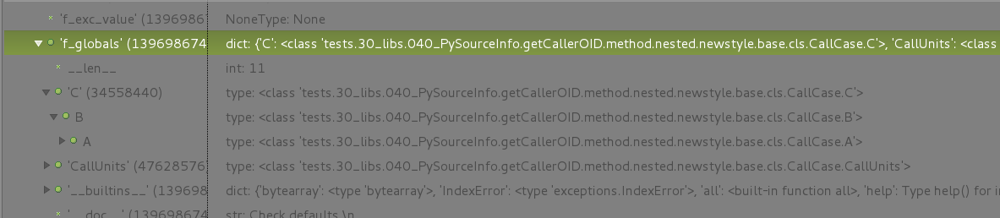

Name-Binding - A Python API for Files and Objects¶
The main task of the subsystem PySourceInfo is to provide code location for specific in memory objects, and partially vice-versa. Therefore a set of functions is defined with a similar pattern of signatures for specific objects. A flat naming schema in advance of multiple parameters is selected for simple use by tab-completion.
The call pattern partially occur more than once in the following figure, the distinction is than given by the name-resolution with replaced applicable objects(obj) for each context. The general schema is given by the following mappings. The application scope for filesystem objects is hereby draftly divided into the two views “filesystem-view” and the OO-style “name-binding-view”. This reflects the logical access to language elements by addressing objects, while the persistency of the code-objects is provided via files within a filesystem addressed by the filesystem type specific name-binding.
The <obj> is replaced by the source to be analyzed. When the object has formally to be doubled, than the <obj> is omitted. E.g.
getModuleModule_pathname
results in
getmodule_pathname.
Currently available sources are:
- Caller - Python object entries contained in the call stack as provided by the stack object from inspect. The stack as a set of items related functions are handeled by <obj>::=Stack
- Module - Python object module
The following figure depicts the application scopes of the interface for the case of the standard import by using the object identifiers as they are reflected in the __qualname__.


Another special case common to all Python releases is the definition of a runtime package, resulting in an adapted PYTHONPATH entry, see previous figure for ‘(*)’. The following main cases are possible:
- The package consists of one file only.
- The package consists of multiple files within a directory.
- The package consists of one or more sub-packages within a directory.
- The package is delivered as a compressed zip file ([PEP273], [PEP441]).
- The package is an implicit namespace package, [PEP420].
For detailed information refer to Runtime Packages.
The scope of the interfaces changes slightly, when binary modules were loaded explicitly. The binaries for Python2 are addressed by the following interfaces. The marked bold interfaces point to the binaries, while the source location remains the same including the linenumber, which is related to the source code.

The default locations and the basic paradigm for binary files has changed for Python3 in accordance to [PEP3147]. This is reflected as depicted in the following figure.


Additional partial helper sources are available:
- Object - Common type and access coverage
- Stack - Generic helper for the stack object as provided by inspect
- Sys - Generic helper based on sys
Address Components¶
This section discusses the components required for the assembly of the runtime and module addresses. These are in general straight-forward, but in some cases require special handling for a general interface:
- due to pure dynamic reconstruction from thr RTTI - Runtime-Type-Information
- due to some special behaviour of the Python interpreter e.g. in case of nested classes
- due to missing special adapted coverage by the available tools, e.g. in case of meta-classes and decorators
Additional information related to advanced features based on the call stack is provided by the companion package PyStackInfo [pystackinfo] .
Address Hierarchies¶
The address as defined for a component is specifically different for various views depending on the domain it is based on. This comprises in case of programming e.g. the inheritance view and the containment view, which could not be transformed simply to runtime one view in any case. In case of code representation by Python the containment view and the inheritance view use partially the same notation(dotted-notation), which basically inherently reflects Pythons core paradigm Anything is an Object - types are meta-objects at runtime.
Containment and Inheritance¶
The containment reflects the hierarchy of runtime elements - objects - as they are allocated initially by the executed Python code. These could span an arbitrary deep tree structure of data, class, and callable entries - reflected by the logical AST.
The inheritance is reflected by the class hierarchy, which defines basically a search order for reusable code elements.
In case of dynamic RTTI analysis and introspection the structure of the containment hierarchy of flat objects is straight forward. Flat objects are runtime objects without involved inheritance hierarchy, where the Python runtime information links directly to the data entity representing the code element. In case of derived classes the runtime reference may e.g. just address the derived class as the type, whereas the actual code is part of a base class. The PySourceInfo displays the code positions, thus has to evaluate the actual defining class within the class hierarchy in order to display the location accurately. The specific Python syntax elements of meta-classes and decorators has to be taken here into account as well as mix-ins/multiple-inheritance.
The PySourceInfo handles all these cases accurately, but makes a compromise in case of performance-costly runtime evaluation. The user can add the decorator getSourceLocation to functions and methods when the dynamic evaluation fails.
Nested Functions¶
Nesting in case of function definitions reflects the physical code location properly.
Nesting is here similar to containment, but related to the type declaration and definition, which reflects in case of functions finally the call hierarchy too. This is also the natural behavior due to the limitation of the means of addressing a nested function from outside within the enclosing scope.
The following example demonstrates the application on nested functions:
1 2 3 4 5 6 7 8 9 10 11 12 13 14 15 16 17 | from __future__ import absolute_import
from pysourceinfo.CallerCodeFlow import getCallerOID,getCallerComponentOID,getSourceLocation
module = getCallerOID()
def fctC():
def fctB():
def fctA():
ret = getCallerComponentOID()
return ret
ret = fctA()
return ret
ret = fctB()
return ret
ret = fctC()
print ret
|
Resulting in the output:
1 | fctC.fctB.fctA
|
Nested Classes¶
The nesting of class definitions reflects containment hierarchies in the sense of addressing the class definition within the Python code at the concrete location of the containment hierarchy appropriately. Nesting is here similar to containment, but related to the type declaration and definition by the meta-classes.
This is handled by the Python interpreter accurately for functions, but the nested class defintions have some issues. The references to the called classes are virtually transformed into the global scope. The following script demonstrates the behavior:
1 2 3 4 5 6 7 8 9 10 11 12 13 14 15 16 17 18 19 20 21 22 23 24 25 26 27 28 29 30 31 32 | from __future__ import absolute_import
from pysourceinfo.CallerCodeFlow import getCallerOID,getCallerComponentOID,getSourceLocation
module = getCallerOID()
class C(object):
class B(object):
class A(object):
def getOID(self):
ret = getCallerComponentOID()
return ret
def getOID(self):
c = C.B.A()
ret = c.getOID()
return ret
def getOID(self):
c = C.B()
ret = c.getOID()
return ret
a = C.B.A()
b = C.B()
c = C()
print "c: " + repr(C)
print "b: " + repr(C.B)
print "a: " + repr(C.B.A)
print "c.getOID: " + c.getOID()
print "b.getOID: " + b.getOID()
print "a.getOID: " + a.getOID()
|
Resulting in the output for the class definitions/meta-data:
1 2 3 | c: <class '__main__.C'>
b: <class '__main__.B'>
a: <class '__main__.A'>
|
The following image depicts the positions of the local class definitions as has to be searched.
The evaluated code paths by the current implemented default algorithm are:
1 2 3 | a.getOID: A.getOID
b.getOID: B.A.getOID
c.getOID: C.B.A.getOID
|
This could be corrected by the decorator @getSourceLocation():
1 2 3 4 5 6 7 8 9 10 11 12 13 14 15 | class C(object):
class B(object):
class A(object):
@getSourceLocation()
def getOID(self):
ret = getCallerComponentOID()
return ret
def getOID(self):
c = C.B.A()
ret = c.getOID()
return ret
def getOID(self):
c = C.B()
ret = c.getOID()
return ret
|
To the expected behavior:
1 2 3 | a.getOID: C.B.A.getOID
b.getOID: C.B.A.getOID
c.getOID: C.B.A.getOID
|
The same behavior occurs for the old-syle classes:
1 2 3 4 5 6 7 8 9 10 11 12 13 14 | class C:
class B:
class A:
def getOID(self):
ret = pysourceinfo.PySourceInfo.getCallerOID()
return ret
def getOID(self):
c = C.B.A()
ret = c.getOID()
return ret
def getOID(self):
c = C.B()
ret = c.getOID()
return ret
|
Mixed-Refrences¶
Mixed references are containment paths with nested callables and callables from within inheritance hierarchies. This results in a path for the source location, which is in dotted notation and includes the actual code elements, instead of the dynamically assigned runtime types.
The following script demonstrates a more complex example with nested functions within methods of nested classese:
1 2 3 4 5 6 7 8 9 10 11 12 13 14 15 16 17 18 19 20 21 22 23 24 25 26 27 28 29 30 31 32 33 34 35 36 37 38 39 40 41 42 43 44 45 | from __future__ import absolute_import
from pysourceinfo.CallerCodeFlow import getCallerOID,getCallerComponentOID,getSourceLocation
module = getCallerOID()
module = getCallerOID()
class C(object):
class B(object):
class A(object):
@getSourceLocation() # fix nested classes
def getOID(self):
def localFct01():
def localFct00():
ret = pysourceinfo.PySourceInfo.getCallerOID()
return ret
ret = localFct00()
return ret
def localFct10():
ret = localFct01()
return ret
ret = localFct10()
return ret
def getOID(self):
c = C.B.A()
ret = c.getOID()
return ret
def getOID(self):
c = C.B()
ret = c.getOID()
return ret
a = C.B.A()
b = C.B()
c = C()
print "a: " + repr(C.B.A)
print "b: " + repr(C.B)
print "c: " + repr(C)
print "a.getOID: " + a.getOID()
print "b.getOID: " + b.getOID()
print "c.getOID: " + c.getOID()
|
Which results in the output for the OID of the code position:
1 2 3 | a.getOID: C.B.A.getOID.localFct10.localFct01.localFct00
b.getOID: C.B.A.getOID.localFct10.localFct01.localFct00
c.getOID: C.B.A.getOID.localFct10.localFct01.localFct00
|
In case of mixed references the resulting OID at the position the getOID function is called is not correlated to the call hierarchy. The following code example shows the call of global function from within a deeper nested call hierarchy:
1 2 3 4 5 6 7 8 9 10 11 12 13 14 15 16 17 18 19 20 21 22 23 24 25 26 27 28 29 30 31 32 33 34 35 36 37 38 39 40 41 42 | from __future__ import absolute_import
#4TEST: import pysourceinfo.PySourceInfo
module = pysourceinfo.PySourceInfo.getCallerOID()
def globalFct01():
def globalFct00():
ret = pysourceinfo.PySourceInfo.getCallerOID()
return ret
ret = globalFct00()
return ret
def globalFct10():
ret = globalFct01()
return ret
class C(object):
class B(object):
class A(object):
def getOID(self):
ret = globalFct10()
return ret
def getOID(self):
c = C.B.A()
ret = c.getOID()
return ret
def getOID(self):
c = C.B()
ret = c.getOID()
return ret
a = C.B.A()
b = C.B()
c = C()
print "a: " + repr(C.B.A)
print "b: " + repr(C.B)
print "c: " + repr(C)
print "a.getOID: " + a.getOID()
print "b.getOID: " + b.getOID()
print "c.getOID: " + c.getOID()
|
Resulting in the OID output of:
1 2 3 | a.getOID: globalFct10.globalFct01.globalFct00
b.getOID: globalFct10.globalFct01.globalFct00
c.getOID: globalFct10.globalFct01.globalFct00
|
Scopes¶
The scopes of the runtime elements generally reflect the actual code elements scope accurately. For an exception refer to the section nested classes.
Scopes of local and global namespaces are utilized by PySourceInfo and PyStackInfo in conjunction with the stack hierarchy and MRO to find the code relations and positions by relying on the control-flow logic implemented in the call stack of the Python interpreter. Due to the available introspection data the required runtime resources are for test and debug cases under standard circumstances negligible.
This pure Python based approach has the advance, that no patch for libraries neither the interpreter itself is required. Thus the packages provide all Python releases with one common API.
Additional information on the stack structure and the included namespace references is available by the package PyStackInfo [pystackinfo] .
Superposition¶
The automatic superposition by coverage of a redefined call interface involves either derived classes, or redefinitions in local namespaces in distinction to global namespace or the callers namespace. This could be distinguished at runtime by analysing the address of the actual executed code object. The PySourceInfo package resolves this accurately as demostrated by the previous examples.
Callables¶
The references to callables at runtime by the interpreter API are represented as unique stack frames, but could be of various types, e.g. built-ins, method, or functions. These could also be located within various scopes.
The PySourceInfo and in particular the PyStackInfo packages provide a comprising type analysis based on the available types from the package types. In case of interfaces where an accurate type of a callable is returned, this is constructed from the stack frame appropriately as a ready to call reference pointer. The package PyStackInfo provides also the reconstruction of call signatures from the stack information including the actually passed parameter values.
For advanced features and detailed description refer to the description of the package PyStackInfo [pystackinfo] .
Functions¶
Functions are in general quite easy to handle, as they represent a context bound and basically constant-code element. Thus normally no holomorphy by inheritance is involved and nested containment could easily be mapped from stack frames. Addressing from upper scopes is not supported, so the problem of the virtual re-scoping into the global namespace as with nested classes does not occur.
An example of the construction of a types.FunctionType callable is:
1 2 3 4 5 6 7 8 9 10 11 12 13 14 | def getCallerFunc(spos=1):
"""Returns the callable mem-address of caller function."""
cf = currentframe(spos)
ret = None
try:
ret = FunctionType(cf.f_code, cf.f_globals)
except TypeError as e:
if hasattr(cf,'__internals__'):
ret = FunctionType(cf.__internals__.f_code, cf.__internals__.f_globals)
if e.args[0].startswith('arg 5 (closure)'):
print >>sys.stderr, "WARNING: This seems to be a PyDev issue, so continue for now:"+str(e)
except Exception as e:
raise
return ret
|
Methods¶
Class and object methods are basically the same type of callables as functions, with slightly variation due to their integration into a classes call infrastructure. The representation of the stack frame represents this by missing a runtime type distinction. Thus the actual type has to be be evaluated dynamically, which could easily be done by resolving the namespaces and the MRO. This is handled by the PySourceInfo and PyStackInfo packages accurately - with the mentioned exceptions for nested classes.
Class Types¶
The packages PySourceInfo and PyStackInfo support Old-Style and New-Style classes. This also include Mix-Ins or Multiple-Inheritance, Meta-Classes and wrapped classes, methods, and functions by Decorators.
Old-Style¶
Transparent support for old style classes, see previous examples:
1 2 3 4 5 6 7 8 9 10 11 12 13 14 | class C:
class B:
class A:
def getOID(self):
ret = pysourceinfo.PySourceInfo.getCallerOID()
return ret
def getOID(self):
c = C.B.A()
ret = c.getOID()
return ret
def getOID(self):
c = C.B()
ret = c.getOID()
return ret
|
For support Python versions see Releases.
New-Style¶
Transparent support for new style classes, see previous examples:
1 2 3 4 5 6 7 8 9 10 11 12 13 14 | class C(object):
class B(object):
class A(object):
def getOID(self):
ret = pysourceinfo.PySourceInfo.getCallerOID()
return ret
def getOID(self):
c = C.B.A()
ret = c.getOID()
return ret
def getOID(self):
c = C.B()
ret = c.getOID()
return ret
|
For support Python versions see Releases.
Meta-Classes¶
The following script depicts the application within the __new__ and __init__ methods of a meta-class.
1 2 3 4 5 6 7 8 9 10 11 12 13 14 15 16 17 18 19 20 21 22 23 24 25 26 27 28 29 30 31 32 33 34 35 36 37 | from __future__ import absolute_import
#4TEST: import pysourceinfo.PySourceInfo
module = pysourceinfo.PySourceInfo.getCallerOID()
class myMeta(type):
def __new__(cls, name, bases, attr):
def metaMethod(self,*args,**kw):
ret = pysourceinfo.PySourceInfo.getCallerComponentOID()
return ret
print pysourceinfo.PySourceInfo.getCallerComponentOID()
attr['metaMethod'] = metaMethod
return type.__new__(cls, name, bases, attr)
def __init__(cls, name, bases, attr):
print pysourceinfo.PySourceInfo.getCallerComponentOID()
class MyClass(object):
__metaclass__ = myMeta
def __init__(self,*args,**kw):
print pysourceinfo.PySourceInfo.getCallerComponentOID()
super(MyClass,self).__init__(*args,**kw)
def myMethod(self):
ret = pysourceinfo.PySourceInfo.getCallerComponentOID()
return ret
mc = MyClass()
a = mc.myMethod()
b = mc.metaMethod()
print "a: " + str(a)
print "b: " + str(b)
|
This prints out:
1 2 3 4 5 | type.__new__
myMeta.__init__
MyClass.__init__
a: MyClass.myMethod
b: MyClass.metaMethod
|
Decorators¶
The syntax element of @decorator requires in the Python implementation due to the dynamic evaluation of the source-location some special handling. This is due to the virtual relocation of the call, which is the position of the wrapped call, whereas the location should be the position of the wrapper code. The dynamic detection of this circumstance based on the code object would require pure-blind stack scanning for each call, resulting from the lack of context information about decorators. Thus is it is decided to add the following specific decorators in order to handle decorated callables including classes.
- getSourceLocation
- getClassSourceLocation
These has to be applied either on the definition of the wrapper calls/classes, or as the first element of a chain of decorators. Thus the actual position of the source code of the decorator is registered by the related object linked to the caller stack frame and will be used in the context of the wrapped calls/classes.
The chained application of multiple decorators requires some additional measures. As a reminder, the projects PySourceInfo and PyStackInfo rely purely on the dynamic runtime type information and the call stack. This is for Python as for other languages providing introspection perfectly applicable. Due to the implementation of pointer based syntax transformation with limited program based excess to the internal interpreter data there are the following exceptions:
- nested class definitions
- chained decorators
- references resulting from spanning multiple instances
The basic rule is that the resulting reference defines the call context of the stack frame. Thus this limits the simple scan for caller evaluation, because the prefix of the pre-span of instances could not evaluated by a simple chain of back-references, but has to be evaluated by the AST, either the the represented interpreter data, or by loading the source particularly for this purpose again.
The solution is therefore simple but requires the application of the previous decorators. These evaluate the code position at their insertion point and store this in their stack objects. Thus the library of PySourceInfo could detect this entry and insert the appropriate location prefix. In order to keep the implementation fast and therefore the simple it is required in case of decorating a decorator - so called chained decorators - it is required to put the decorators for the code position at the beginning of the chain, and in addition at the end of the chain.
1 2 3 4 5 6 7 | decoratorlocation
@getSourceLocation
@someDecorator
@justAnotherDecorator
@andOneMore
@getSourceLocation
def theActualDecorator()
|
The following cases has to be distinguished.
- no sub-decorator
- chained sub-decorators
ffs.
Module Types¶
The persistent Python code is divided into packages and modules. These represent storage entities of code within single files as modules, and groups assembling one or more modules into a combined set as a package. Consequently the addressing of modules and packages is seamless integrated into the address pattern of the runtime representation of Python syntax elements. Python supports hereby for multiple top-nodes with a look-up algorithm for requested modules.
The address of a syntax entity consists basically of three parts:
- The package path relative to one of the top-nodes.
- The module path, relative to the package entry path. The package can consist hereby of one and only module.
- The relative object path within a module. This represents the global address within a modules global name space.
The address syntax itself is seamless combining all three parts into one. The addresses as defined within the telecom domain as OID - object identifier - are represented by dotted-notation.
The PyStackInfo package uses the PySourceInfo package for the management of address components. This comprises in particular the path names correlated tightly to the file system and the PYTHONPATH environment variable.
Modules API by imp¶
The imp module is utilized by the PySourceInfo package in order to get the type information of modules by the interface getmodule_type, which provides re-mapped values from imp.
The utilized calls are:
1 | from imp import is_builtin,is_frozen,find_module
|
The results of the interface getmodule_type is mapped onto the values of imp, thus provides a compatible interface for:
1 | from imp import PY_SOURCE,PY_COMPILED,C_EXTENSION,PKG_DIRECTORY,C_BUILTIN,PY_FROZEN
|
which could also be imported with identical values from PySourceInfo:
1 | from pysourceinfo.PySourceInfo import getmodule_type,PY_SOURCE,PY_COMPILED,C_EXTENSION,PKG_DIRECTORY,C_BUILTIN,PY_FROZEN
|
Modules API by sys¶
The sys package provides for basic runtime platform related interfaces. This covers for PyStackInfo and PySourceInfo the requirement for the two data structures:
1 2 | sys.argv
sys.modules
|
Which are applied as:
sys.argv
The sys.argv is in particular used by PySourceInfo in order to split the package-path and the internal module-path. This is under some circumstances slightly more accurate than by inspect only.
sys.modules
The sys.modules is used here mainly as a ready-to-use enumeration for set operations.
API - Interfaces¶
Common conventions¶
The following common conventions are applied:
normpath
In general the processing and results of the pysourceinfo is proceeded with normalized filesystem paths by normpath. For specific effects refer to the following items.
realpath
Optionally the processing and results could be converted to realpath, which in addition to the seperator normalization resolves and converts symbolic links to the actual filesystem nodes.
filenames
Filenames represent either the the source files, or the compiled meta-files. While the source files are represented commonly by the name and the postfix ‘.py’ as default, the compiled files vary by multiple options and Python versions.
pathnames
Pathnames are normalized in general without a trailing path seperator. The pathnames are returned absolute, except for the interfaces ending by “_rel”, which result in relative pathnames.
filepathnames
Filepathnames are normalized in general. The filepathnames are returned absolute, except for the interfaces ending by “_rel”, which result in relative pathnames.
In case of packages within an own subdirectory, the filepathname is defined as the path to the package path, thus actually represents the subdirectory of the package. This seems to be consequent, though the package basically is represented by it’s __init__ file, which is not displayed.
sys.path
The original sys.path variable is kept untouched, while the contained values are internally normalized and processed for comparison with normalized values. This results in returned values as normalized filesystem paths, which evantually deviate from the literal input, e.g.:
1
/a/b////c////d///..// => /a/b/c
Filesystem Binding Functions¶
The bindings provide simplified access to files for stack and memory objects.
| [template] | [obj] | [description] |
|---|---|---|
| get<obj>_filename | Caller[C0], Module[M0], | name of the actual executed module file itself |
| get<obj>_filepathname | Caller[C1], Module[M1], | absolute path to actual executed module |
| get<obj>_linenumber | Caller[C2] | line number of caller in module file |
| get<obj>_linenumber_def | Caller[C3] | first line number of the caller |
| get<obj>_package_name | Caller[C4], Module[M4], | package name |
| get<obj>_package_filename | Caller[C5], Module[M5], | package file/directory name |
| get<obj>_package_filepathname | Caller[C6], Module[M6], | absolute path into the package directory/file |
| get<obj>_package_pathname | Caller[C7], Module[M7], | absolute path into the package directory/file |
| get<obj>_pathname | Caller[C8], Module[M8], | pathname to containing directory of the module |
| get<obj>_pathname_rel | Caller[C9], Module[M9], | path name to module including package |
| get<obj>_pathname_sub | Caller[C10], Module[M10], | path portion between the package and the module |
| get<obj>_python_pathname | Caller[C11], Module[M11], | directory from sys.path |
| get<obj>_source_filepathname | Caller[C12], Module[M12], | absolute path to source module |
See pysourceinfo.fileinfo [shortcuts]
Object Binding Functions¶
The bindings provide simplified address evaluation and resolution for stack and memory objects.
| [template] | [obj] | [description] |
|---|---|---|
| get<obj>_by_id | Module[M20] | reference to <obj> |
| get<obj>_by_name | Module[M21] | reference to <obj> |
| get<obj>_module | Caller[C22] | the module itself |
| get<obj>_module_name | Caller[C23] | name of the module itself |
| get<obj>_module_name_sub | Caller[C24] | OID portion from package to module |
| get<obj>_module_oid | Caller[C25] | name of module relative to sys.argv |
| get<obj>_module_oid_sub | Caller[C26] | relative module OID within package |
| get<obj>_name | Caller[C27], Module[M27] | the __name__ attribute |
| get<obj>_name_sub | Module[M28] | the __name__ attribute |
| get<obj>_oid | Module[M29] | the complete OID relative to sys.argv |
| get<obj>_oid_sub | Module[M30] | relative module OID within package |
| get<obj>_package_name | Caller[C31], Module[M31] | the name of the package |
| get<obj>_type | Module[M32] | bit array for <obj> |
See pysourceinfo.objectinfo [shortcuts]
Sets and Entities¶
| [template] | [obj] | [description] |
|---|---|---|
| get<obj>_module_filepathname_list | Sys[S70] | list of file path names for all loaded modules |
| get<obj>_module_id_list | Sys[S71] | list of IDs for modules in sys.modules |
| get<obj>_module_list | Sys[S72] | list of modules on stack/sys.modules |
| get<obj>_module_name_list | Sys[S73] | list of module names from sys.modules |
| get<obj>_module_pathname_list | Sys[S74] | list of path names for modules in sys.modules |
| get<obj>_module_python_pathname_list | Sys[S75] | list of python path entries for module in sys.modules |
REMARK: The naming schema has one exception, when the object is module, the name part _module is dropped in order to avoid redundancy, e.g.:
1 2 | obj := module
getmodule_module_list() => getmodule_list()
|
Similar for the remaining.
See pysourceinfo.infolists [shortcuts]
Python Releases¶
The pysourceinfo in combination with pystackinfo provides fully dynamic replacement for the evaluation of __qualname__ for Python2 and Python3. This comprises the correct detection of static and dynamic, e.g. nested classes, meta-classes, nested decorators, dynamic instance and class methods and static functions, dynamic functions for global and private scope, etc.
Python2.7
The current version of this package is tested for Python2.7+ with:
2.7.5, 2.7.12
Python3.x
The current version of this package is tested for Python3.5+ with:
3.5.3, 3.6.2
PyPy2
The current version of this package is tested for PyPy2 with:
5.10.0
PyPy3
The current version of this package is tested for PyPy3.5 with:
5.10.1
The support for __qualname__ [PEP3155] with extended support for dynamic created entries is available by [pystackinfo].
Resources¶
- classtools package [classtools]
- decorator package [msimio]
- functools Python2 [functools2]
- functools Python3 [functools3]
- inspect Python2 [inspect2]
- inspect Python3 [inspect3]
- pystackinfo package [pystackinfo]
- types Python2 [types2]
- types Python3 [types3]

{kind=link}
{kind=link}